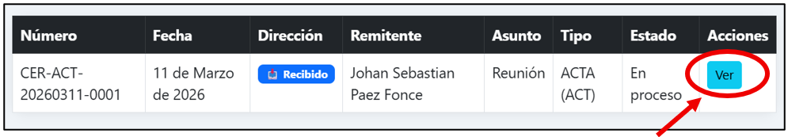
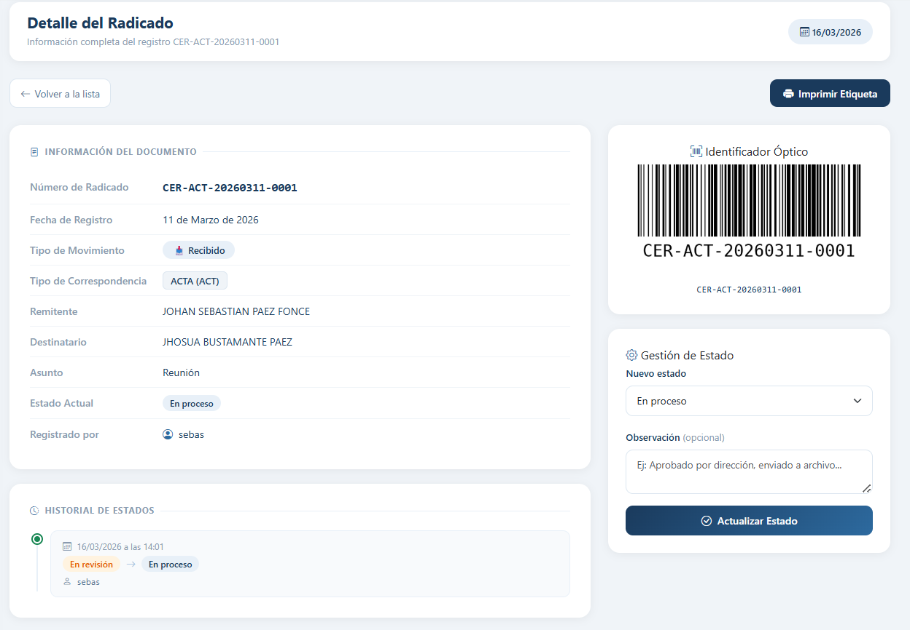
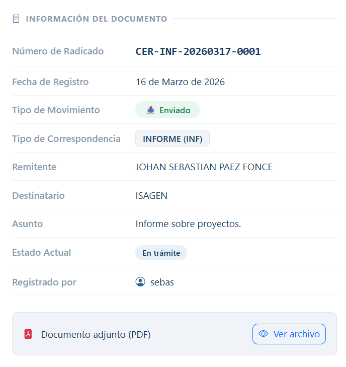

Ver detalle de un radicado
Haz clic en Ver desde la lista de radicados o desde el Dashboard.

¿Qué encuentras en el detalle?

Panel izquierdo — Ficha del documento
- Número de radicado
- Fecha de registro
- Tipo de movimiento y tipo de correspondencia
- Remitente, destinatario y asunto
- Estado actual y usuario que lo registró
- Enlace al PDF adjunto (si tiene)

Panel superior derecho — Código de barras
Código generado automáticamente. Escanéalo con un lector USB desde la lista de radicados para ubicar el documento al instante.

Panel inferior derecho — Gestión de estado
Disponible solo para Administrador u Operador. Desde aquí cambias el estado del radicado. Ver Cambiar estado de un radicado.
Parte inferior — Historial de estados
Registro cronológico de todos los cambios de estado. Es de solo lectura — no puede modificarse ni eliminarse.
¿Para qué sirve el historial?
Permite a directivos y auditores conocer con exactitud el recorrido del documento:
- Quién lo recibió.
- Quién lo procesó.
- Fecha y hora de cambió de estados.
- Observaciones registradas en cada etapa.